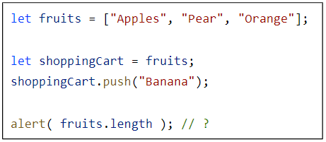

-
ผลลัพธ์ของความยาว array คืออะไร

4
-
ให้ทำตามขั้นตอนต่อไปนี้
- สร้าง array ชื่อ styles ที่มี items ชื่อ “Jazz” และ “Blues”
- เพิ่ม “Rock-n-Roll” ต่อท้าย
- นำค่า Classics ไปทับค่าตรงกลางของ Array
- นำ items ตัวแรกออกมาและลบ items ตัวนั้นออกจาก array
- เพิ่ม “Rap” และ “Reggae” ไปข้างหน้าของ Array
let styles = [`jazz`, `blues`];
styles.push(`Rock-n-Roll`);
styles[Math.floor(styles.length / 2)] = `Classics`;
styles.shift();
styles.unshift(`Rap`, `Reggae`);
-
เขียนฟังก์ชัน sumInput() ที่
- ใช้ propmt รับ value มาเก็บใน array
- หยุดถามเมื่อเจอค่าที่ไม่ใช่ ตัวเลข
- คำนวณผลรวมของตัวเลขทั้งหมดใน Array
function sumInput() {
let value = [];
let sum = 0;
while(true) {
let x = +prompt(`Enter number`);
if ( isNaN(x) ) break;
value.push(x);
}
for (let v of value) {
sum += v;
}
console.log(`Sum is ${sum}`);
}
-
Maximal contiguous subarray (**Optional**)
ให้เขียนฟังก์ชัน getMaxSubSum(arr) ที่ return ผลรวมของ subarray ที่มากที่สุดที่ติดกัน
function getMaxSubSum(arr) {
let frame = arr.length;
let maxSet = [];
let maxSum = -Infinity;
for(let i = 0; i < arr.length; i++) {
for(let j = 0; j < arr.length - frame + 1; j++) {
let sum = 0;
let set = arr.slice(j, j + frame);
set.forEach((item) => sum += item);
if( sum > maxSum) {
maxSum = sum;
maxSet = set;
}
}
frame--;
}
console.log(`The Maximum contiguous subarray is ${maxSet}, with a sum = ${maxSum}.`);
}